Traducir Programas
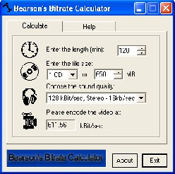 |
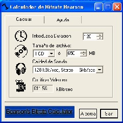 |
Introduccion:
Durante mucho tiempo he sentido frustracion cuando al descargar un programa que me hacia falta para algo resulta que estaba en ingles, asi que intente, como otras muchas veces encontrar informacion en la red de cómo traducirlos al español, para mi desesperacion la tarea no resulto sencilla, pues no hay mucha informacion disponible y me ha supuesto muchas horas de busqueda y experimentacion conseguir realizar la labor de traducir los programas.
Para ello, se necesitan unas cuantas horas de dedicacion y unos cuantos buenos programas que describire a continuacion.
Espero que este manual sea de utilidad para vosotros.
Capitulo I
Los programas:
Los programas necesarios son de lo mas variado y pintoresco, pero empecemos por el principio, lo primero que necesitamos es un programa para ver el interior del archivo que queremos traducir, y para ello disponemos de dos buenas erramientas que son : 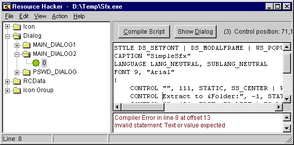 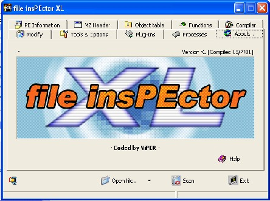 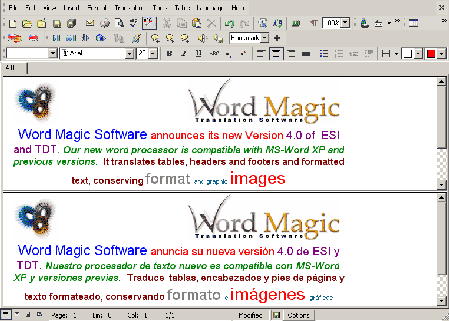
Exescope. Que podeis descargar una version shareware de esta pagina en ingles y una version en español de aqui en la seccion de herramientas de traduccion, dicho esto, veamos su aspecto:
como podemos ver en la imagen, podemos editar cada una de las secciones de la parte derecha y la edicion aparecera en la parte izquierda pudiendo traducir y guardar los cambios, pero eso lo explicaremos mas adelante.
ResHaker: Este programa es igual que el anterior pero se complementan muy bien, durante la traduccion ya vereis por que, a veces con exescope no nos deja cambiar la longitud de los caracteres, y en este es posible, o viceversa, bueno este programa se puede descargar de aqui directamente en ingles y como el anterior esta pagina en español, en erramientas de traduccion, este es freeware. Veamos su aspecto:
Bien, ya tenemos nuestras principales herramientas, pero nos encontraremos alguna vez con la desagradable sorpresa que tanto el uno como el otro nos pueden decir que no pueden abrir el archivo porque esta comprimido, entonce para poder descomprimirlo, necesitamos saber el programa que lo comprimio y para eso tenemos este otro programa, de la siduiente pagina.
File Inspector: este programa nos dira, a parte de otrs cosas que compresor comprimio el programa para asi poder descomprimirlo, nosotros vamos a utilizar File Inspector XL y lo descargaremos de http://www.fileinspector.cjb.net/
Y luego ya sabiendo el descompresor que necesitamos ya podemos descargarlo de la siguiente pagina ir a exetools y descomprimirlo, para poder editarlo.
Bueno, lo siguiente si no sabemos mucho ingles es un traductor, yo personalmente utilizo English-Spanish interpeter, que me ha sido muy util, pero igual de efectivos pueden ser: Power traslator ó systram , ya se que todos son de pago pero podeis bajar una version shareware de English-Spanish interpeter en esta web por supuesto es shareware.
Lo que nos falta todavia son unas erramientas necesarias para el caso de que no encontremos lo que queremos traducir y debamos buscarlo de otra manera me refiero a que algunos programas no muestran cadenas ni nada parecido y no por que esten comprimidos, si no por que no las muestran, para esto necesitaremos un editor exadecimal para cambiar el idioma, no os preocupeis despues explicare como, bien el editor que yo utilizo es:
Hacman Ex Editor, que para mi es el mejor pero eso va a gustos,
De esta pagina podeis descargar una version shareware y el lenguaje pack para español Hackman Ex Editor pero si buscais en google seguramente encontrareis alguno freeware en español, aquí una imagen: 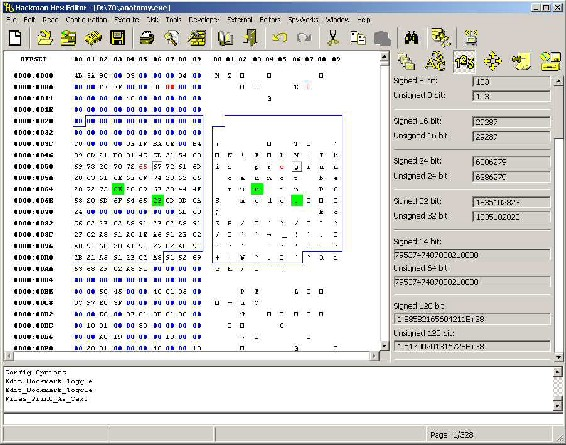 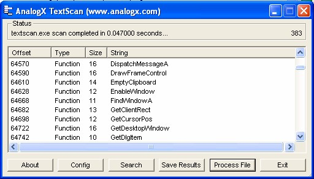
Ahora nos falta el compañero del editor, pues seria muy dificil encontrar las cadenas a sustituir sin saber que buscar y donde, para eso tenemos lo que yo llamo la joya de la corona, un espia increible, se trata deTEXTscan.
Textscan: Esta es una curiosa aplicación que sirve para extraer todos los textos escritos en un archivo exe o dll (muchos de los cuales no veremos con los editores de recursos) a un simple un fichero .csv que podemos pasar fácilmente a texto cambiándole la extension a .txt. Es muy útil para encontrar los textos que tendremos que cambiar con
los editores héxadecimales. Está en inglés (aunque esto no es un inconveniente, porque es muy fácil de usar y tiene pocas opciones) y lo puedes bajar desde Aqui, aquí teneis una vista de el trabajando:
En fin, recomiendo que los descargueis todos y los tengais a mano para poder empezar a seguir este manual, en primer lugar lo que hay que saber es que traducir de todo el conjunto de archivos que tiene el programa, lo veremos en el siguiente capitulo.
A casi se me olvida, el notepad, o block de notas de windows tambien sera necesario para traducir algunos archivos.
Capitulo II
QUE TRADUCIR
Normalmente los textos, menús, avisos, imágenes, iconos, y en definitiva todo lo que llamaremos RECURSOS, se encuentran en los archivos EXE (ejecutables) y DLL (librerías), aunque también se pueden encontrar en archivos con otras extensiones (como OCX y VBX). 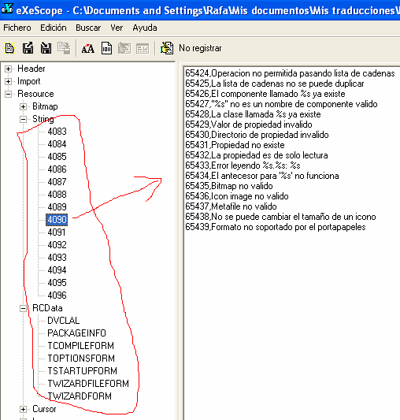
También están los programas con soporte multilingüe (por ejemplo: FlashGet o Ad- Aware) que ya vienen preparados para que el usuario confeccione su propio módulo de idioma. La mayoría de los textos de menús y avisos están en un archivo que puede tener diferentes extensiones (LNG, TXT, INI) y se pueden editar desde el Bloc de Notas o Word (aunque lo suyo es usar un editor hexadecimal como Hackman o cualquier otro). No tienen más dificultad que abrir el fichero en inglés y cambiar las frases y palabras por su traducción al español, renombrar el archivo, incorporarlo a la carpeta que contenga el resto de los archivos de idioma y seleccionar desde el programa el nuevo idioma.
Por desgracia este tipo de programas no son tan abundantes como sería deseable y normalmente tendremos que trabajar con los archivos EXE y DLL. Y en muchos de ellos a traves del editor exadecimal.
En la pagina siguiente vemos una imagen de exescope trabajando que ilustra lo dicho anteriormente.
Pero para entenderlo de verdad vamos a ver el siguiente capitulo que muestra cuales son generalmente las partes a traducir.
Capitulo III
Traducir con eXescope
Para explicar lo siguiente vamos a utilizar el programa estrella para esto, se trata del editor de recursos ExeScope: 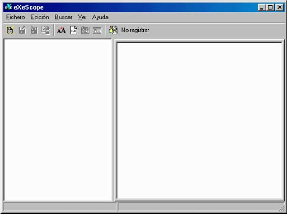 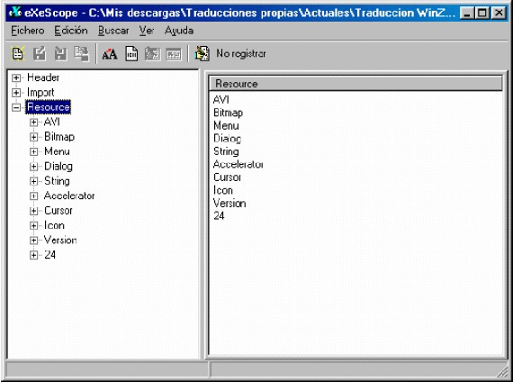
Al usar esta aplicación para "abrir" los archivos EXE y DLL nos podemos encontrar (en la mayoría de los casos) con trs estilos diferentes (en función del lenguaje de programación utilizado para crear el archivo) y que para entendernos vamos a llamar TIPO 1 , TIPO 2 y TIPO3..
TIPO 1
Es el más manejable y por lo tanto, el mejor desde el punto de vista del traductor. De este tipo son los archivos ejecutables de WinZip 8.1 y ZoneAlarm, entre otros. Si utilizamos de ejemplo el archivo ejecutable del primero (Winzip32.exe) y lo editamos con Exescope y desplegamos la raiz Resources (recursos) nos encontramos una serie de sub-apartados, algunos de los cuales son los que interesan para nuestra labor. Ver imagen
Lo que nos interesa es lo siguiente:
AVI (también puede ser GIF):
Ficheros AVI o GIF con las animaciones que se pueden ver en el programa. Desde el editor de recursos podemos exportarlas (extraer del ejecutable) y con la herramienta adecuada, hacer las modificaciones que deseemos para, a continuación, importarlas de nuevo dentro del ejecutable. 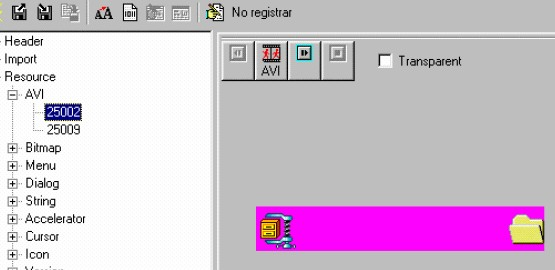
Generalmente no se suelen tocar pues a nivel de traduccion no tienen interes.
BITMAP:
Aquí están los archivos de mapas de bits que contienen las imágenes que el programa muestra. Se pueden exportar como archivos BMP, modificar con un editor como el Paint que trae Windows (por ejemplo) y volver a importarlo dentro del ejecutable. Al hacer esto hay que tener en cuenta no modificar el tamaño de la imagen. 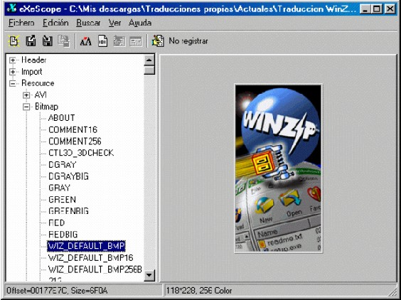
Esto tampoco suele tener mucha utilidad a efectos de traduccion, pero lo explico para que quede constancia que tambien se pueden cambiar.
MENU:
Nos muestra los menús del programa en esquema de árbol. Estos menús pueden ser los que aparecen en la barra de menús (el típico de la parte superior de la pantalla), el menú contextual (el que aparece cuando hacemos click con el botón derecho del ratón) o cualquier otro tipo de menú desplegable. Para modificarlo hay que resaltar el término que deseamos cambiar y escribir. El tamaño y disposición se adapta automáticamente a la extensión de término escrito, por lo cual, no hay que preocuparse por este aspecto. Observaremos que, muy a menudo, aparece delante o en medio de los términos o frases el símbolo &, esto sirve para indicar que el carácter siguiente al símbolo es la tecla de acceso rápido y por lo tanto en el programa aparecerá subrayada. Hay que tener cuidado de que en una misma rama del menú no aparezca la misma letra marcada en dos opciones distintas. 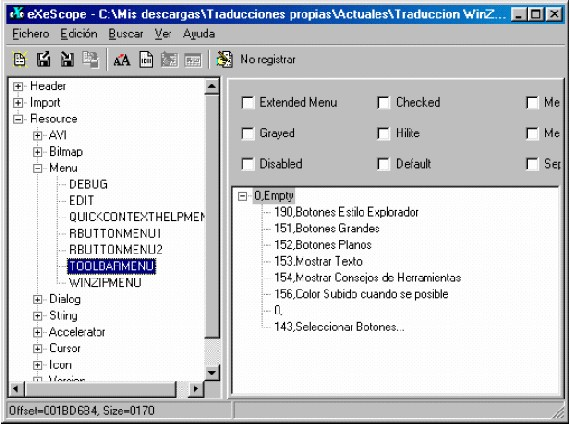
Aquí es donde trabajaremos principalmente, pues lo mas interesante de cambiar son los menus, pues son los que se utilizan en la aplicación.
DIALOG:
Como podemos deducir, aquí encontramos los cuadros de diálogo del programa que podremos ver de forma gráfica gracias al editor de diálogos de ExeScope. Es donde más trabajaremos, puesto que no solo hay que traducir sino que además, 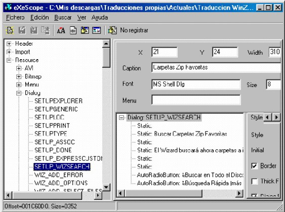 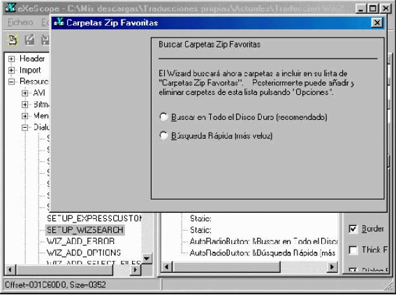 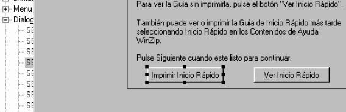 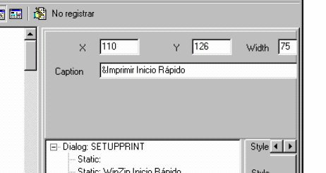
en algunos casos, habrá que modificar la disposición de los elementos del cuadro del diálogo para que se visualicen correctamente. Esto es debido a que casi todas las palabras en español ocupan más espacio físico que los términos equivalentes en inglés y en los cuadros de diálogo (al contrario de lo que sucedía con los menús) no se produce el redimensionado automático, por lo cual debemos
hacerlo manualmente, modificando la disposición original de los elementos. Veamos estas dos capturas:
aquí como hemos dicho ante, se pueden modificar los tamaños de las etiquetar si vemos que no se muestra la palabra completa.
Se puede hacer de dos maneras: redimensionando directamente con el editor de diálogo mediante el simple procedimiento de pulsar y arrastrar, o modificando los valores X – Y y el tamaño (Width - Ancho y Height - Alto) que debe tener el elemento que tengamos seleccionado.
Yo personalmente prefiero el metodo de arrastrar pues como lo estas viendo el resultado es mejor.
A continuacion veremos uno de los apartados mas pesados de traducir, las strings o cadenas, cuando las traduzcais ya vereis que tengo algo de razon.
STRING:
Aquí están las frases o palabras que aparecen en los cuadros de aviso y error, en la barra de estado, en los "tooltips" (que son estos cartelitos explicativos que aparecen al poner el puntero sobre un icono o una función del programa)... Muchas de estas frases o palabras no las veremos casi nunca, puesto que solo aparecen en casos muy específicos y que normalmente no se dan. Aquí, igual que con los menús, no hay que preocuparse de las dimensiones y/o posición, la única e importante precaución a tener en cuenta es no modificar nada más que los textos. No debemos cambiar el orden, ni los números identificativos, ni la coma que les sigue, así como tampoco símbolos como "%s", "%d", "$0A", "$0D" o similares. Sí podemos cambiar de posición el símbolo &, que tiene aquí la misma función que en los menús. 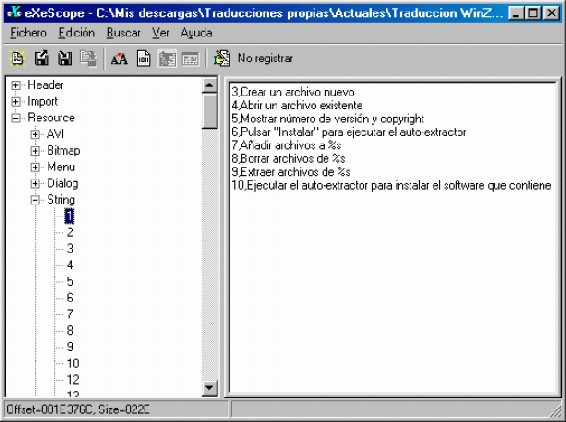
Como ya comprovareis las string suelen ser bastante numerosas.
CURSOR:
Aquí están los cursores del programa. Se pueden exportar, modificar e importar de nuevo: 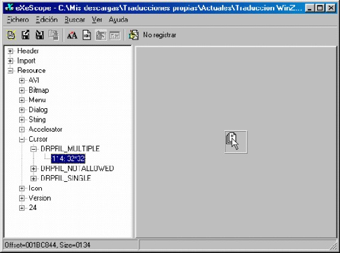
Como pasa con los bitmap, los cursores, tampoco suelen tocarse en la traduccion.
Icon:
Aquí los iconos, tambien igual que los cursores se pueden exporta e importar. 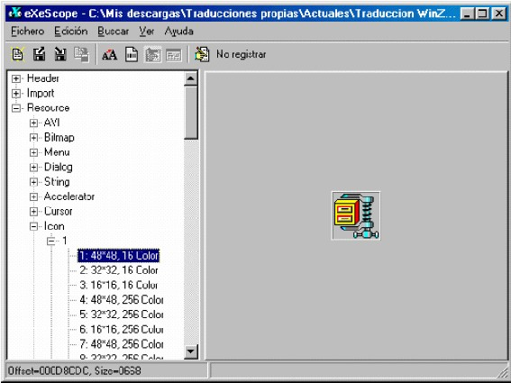
DIALOGDATA:
Aquí están las frases/palabras que aparecen en los cuadros de diálogo desplegables y son iguales a las que aparecen en String. 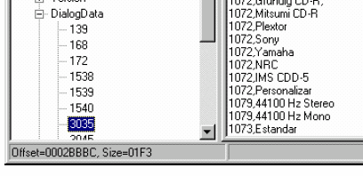 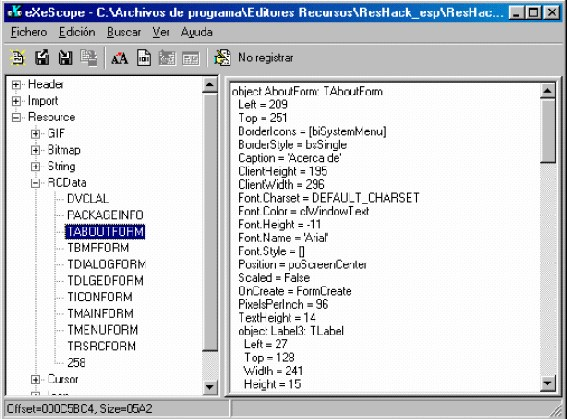
Se pueden encontrar mas apartados en algunos programas pero para la traduccion carecen de interes.
TIPO 2
Este otro tipo es un poquito más complejo de manejar. La diferencia estriba en que los cuadros de diálogo están en un apartado llamado RCData y no se presentan gráficamente, sino como una relación de órdenes escritas una tras otra.
Aquí hay que buscar las frases/palabras que están entre comillas simples y que son los elementos a traducir (ejemplo: Caption = 'About...' o Hint = 'About...'). Algunos ejecutables de este tipo no permiten escribir más caracteres de los que tiene la palabra o frase en inglés. Es decir, si vemos 'About...' se puede escribir, como mucho, ocho caracteres, pero si se usa alguno menos los sobrantes se pueden utilizar en la siguiente palabra/frase.
Aunque es más complicado, también se pueden modificar la posición y dimensiones de los diferentes elementos de un cuadro de diálogo. Para ello, una vez traducida la frase/palabra, buscamos unas líneas más arriba o abajo las expresiones Left, Top, Width, Height, que son equivalentes a las que vimos anteriormente como X, Y, Ancho y Alto. Por ello, es posible modificarlos al igual que se redimensionaban por valores en el tipo anterior. La dificultad está en que, al carecer de la ayuda del editor de diálogos, para ver los resultados habrá que buscar la pantalla en el programa y observar los resultados.
También se puede dar que, una vez traducidos los archivos EXE y DLL del programa, al comprobar el resultado de nuestro esfuerzo, nos apercibamos que en el programa aparece algún texto sin traducir. Esto es debido (normalmente) a que este texto no traducido se encuentra en una parte del archivo diferente a la que contiene los recursos. En estos casos podemos recurrir al editor hexadecimal para abrir el archivo en cuestión y desde ahí buscar el texto y modificarlo, teniendo muchísimo cuidado de no modificar nada más y con la gran limitación de que aquí no podremos añadir ni un carácter más de los que tenga la palabra o frase en inglés.
ARCHIVOS COMPRIMIDOS Y ENCRIPTADOS
A veces nos encontraremos que al intentar abrir un archivo, el editor de recursos es incapaz de leerlo y modificarlo porque, o está comprimido o ha sido encriptado. En este caso, si tenemos un poco de suerte, aún es posible solucionar este detalle. Lo primero que debemos hacer es averiguar que programa y versión de compresor (packer) ha sido utilizado. 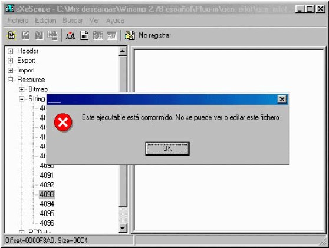 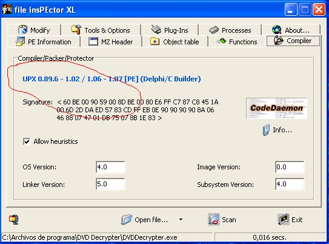 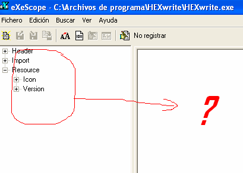 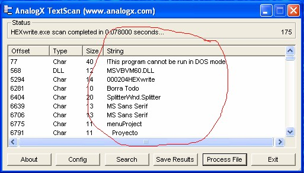 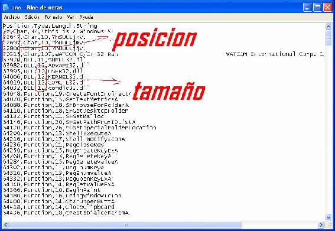 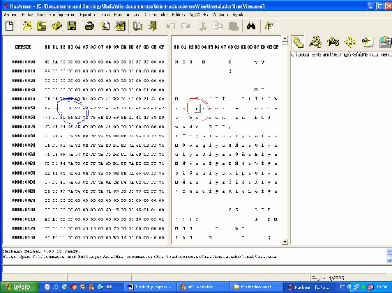 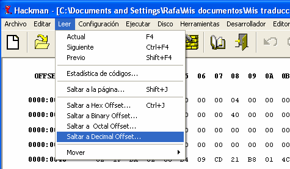 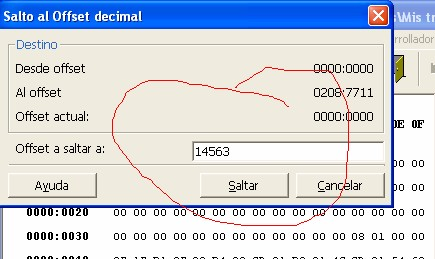 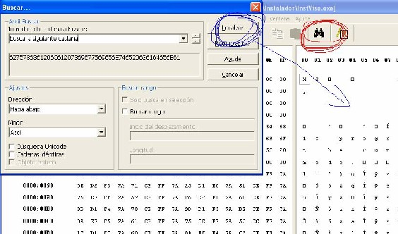
Bien aquí entra en juego file inspector para saber con que esta comprimido o encriptado:
El circulo rojo marca el compresor que en este caso es UPX 0.89.6……. en este caso deberemos dirigirnos a una pagina como http://www.exetools.com/unpackers.htm o http://www.protools.cjb.net/ para bajarnos los desempaquetadores oportunos y a partir de hay seguir con nuestro trabajo.
TIPO 3
No, no me olvidaba he dejado este tipo para el final por que es a mi juicio el que mas trabajo tiene, veamos de que se trata, a veces despues de descomprimir el archivo y intentar abrirlo bien sea con exescope o ResHacker, ni aparecen strings ni dialogos ni nada de nada, y aquí nos quedamos mas perdidos que un pato en un garaje ver imagen:
aquí no aparece nada de nada y al pasarlo por File Inspector, nos dice que no esta comprimido, ¿que hacer?, pues para eso tenemos nuestro TEXTscan que encontrara las cadenas que buscamos:
bien, una vez localizadas las guardamos en un archivo .csv que despues podemos editar e imprimir con el block de notas resultando un arcuivo que nos dice la situacion de la cadena y lo mas importante su extension que no devemos sobrepasar, pues inutilizaria el archivo:
muy bien con esta informacion ya podemos abrir el editor exadecimal y modificar letra por letra todas las cadenas de palabras que sea necesario como se ve en la imagen de la pagina siguiente:
Vemos el carácter marcado en Rojo y el correspondiente en exadecimal, el carácter se resalta clicando enima y simplemente se sustituye con el que corresponda, pero antes de esto hemos llegado a esa posicion dando un salto:
clicando en lo resaltado en azul :
se llega aquí, que es donde se va a introducir la posicion a la que queremos ir, previamente buscada en el archivo que tenemos impreso del block de notas:
Si no aparece en el archivo que tenemos, tenemos un ultimo recurso que es buscar la cadena con el propio editor:
haciendo click en buscar (Rojo) aparece el menu, se introduce la cadena a buscar y se pulsa localizar (Azul)
Bueno hasta aquí este manual, no olvideis hacer una copia de seguridad del archivo, por si acaso SUERTE
Epilogo:
Las tecnicas de ingenieria inversa que se explican en este manual estan dedicadas a la traduccion de programas que asi lo permitan, en caso contrario se debe pedir permiso al propietario del software para proceder a su traduccion.
MAS INFORMACION EN LA SALA DE INTERNET Y COMPUTADORAS EN ESPAÑOL.-
Andaluzsoy